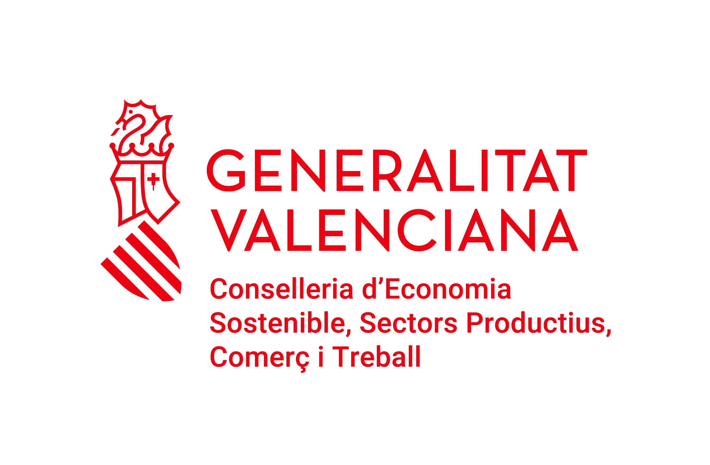
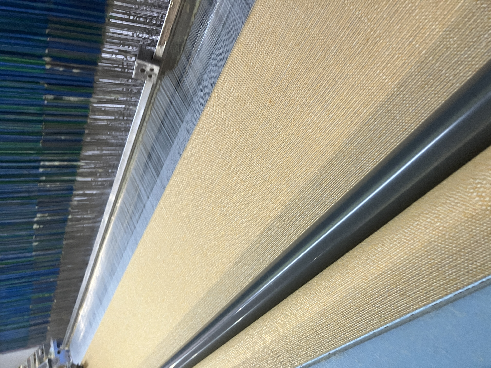

EMPRESA
HISTORIA
Industrias Ribertex, S.L., es una empresa textil familiar, ubicada en BIAR, en la provincia de Alicante, que data de 1985, aunque la familia lleva más de 50 años dedicándose a la producción de artículos textiles para el hogar.
Desde su constitución la empresa se dedicó principalmente a la producción de artículos de limpieza, pero es a partir del año 1998, cuando viendo las necesidades por parte de empresas próximas, y a su vez disminuida la demanda de los artículos de limpieza que fabricaba , cuando decide empezar a invertir en maquinaria con el fin de dar respuestas al exceso de demanda de tejeduría de estas empresas , con nuevos artículos que ofrecer al mercado.
Así en los años sucesivos, la empresa empieza a especializarse en la fabricación de todo tipo de artículos de tapicería y decoración así como tejidos en crudo y tejidos con las características que nos demanda cada cliente.

VIDEO SOBRE LAS MAQUINAS DE LA EMPRESA
MAQUINA SMIT GS980F
NOTICIAS
AYUDA INVERSIÓN INDUSTRIAL 2019
El proyecto “INVERSIÓN INDUSTRIAL 2019” de INDUSTRIAS RIBERTEX S.L. con número de expediente (INPYME/2019/182), ha sido beneficiario de una ayuda de (102.063,50 €) concedida por la Consellería de Economía Sostenible, Sectores productivos, Comercio y Trabajo, a través del Programa de ayudas enmateria de industrialización para inversiones de pymes industriales que mejoren la competitividad y sostenibilidad de los sectores del textil, calzado, cerámico, metal-mecánico.
NOTICIAS
INVERSIONES PARA EL AUMENTO DE CAPACIDAD PRODUCTIVA DE EMPRESA DE TEJEDURIA TEXTIL
AYUDA INVERSIÓN INDUSTRIAL 2021
El proyecto “INVERSIÓN INDUSTRIAL 2021” de INDUSTRIAS RIBERTEX,S.L. con número de expediente INPYME/2019/196, ha sido beneficiario de una ayuda de 36.785,00.-euros concedida por la Consellería de Economía Sostenible, Sectores Productivos, Comercio y Trabajo, a través del Programa de ayudas para mejorar la competitividad y sostenibilidad de las pymes industriales de los sectores de la Comunitat Valenciana del calzado, cerámico, metal-mecánico, textil, juguete ,marmol-piedra natural y áridos, madera-mueble e iluminación, químico, automoción, plástico, envases y embalajes, productos infantiles, papel y artes gráficas, valorización de resíduos y los sectores emergentes de la biotecnología y la producción de video-juegos.
INSTALACIONES
MAQUINARIA
Nuestra empresa debido a la constante inversión en bienes de producción está preparada para fabricar cualquier artículo pudiendo trabajar con su maquinaria con gran variedad de materia prima, con el fin de ofrecer a nuestros clientes un producto final de excelente calidad.
